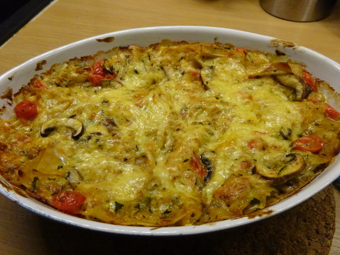

Zucchini-Lasagne

- Zubereitung: ca. 20 Minuten
- Backzeit: ca. 35 Minuten
- Für 4 Portionen
Zutaten
- 100 g Champignons
- 250 g Tomaten
- 250 g Zucchini
- 1 kleine Zwiebel
- 2 EL Öl
- 1 EL Mehl
- 1/2 TL Brühe, gekörnt
- 1/2 TL Oregano
- 100 g Sahne
- Lasagneplatte(n) (ohne Vorkochen)
- 200 g Gouda
Zubereitung
- Zucchini grob raspeln, Tomaten häuten und würfeln, Pilze klein schneiden. Die Zwiebel würfeln und im Öl kurz anschwitzen. Das Mehl darüber stäuben und kurz Farbe nehmen lassen.
- Zucchini, Pilze und Tomaten darunter mischen, mit den Gewürzen kräftig abschmecken und 4 bis 5 Minuten köcheln lassen. Die Sahne unterrühren.
- Die Auflaufform leicht mit Öl ausstreichen. Als unterste Schicht etwas Soße, dann abwechselnd mit Lasagneplatten, Käse und Soße. Obere Schicht Soße mit reichlich Käse. Bei 200 °C ca. 35 Minuten backen.
Quelle: https://www.chefkoch.de/rezepte/96471038063925/Zucchini-Lasagne-ohne-Fleisch.html